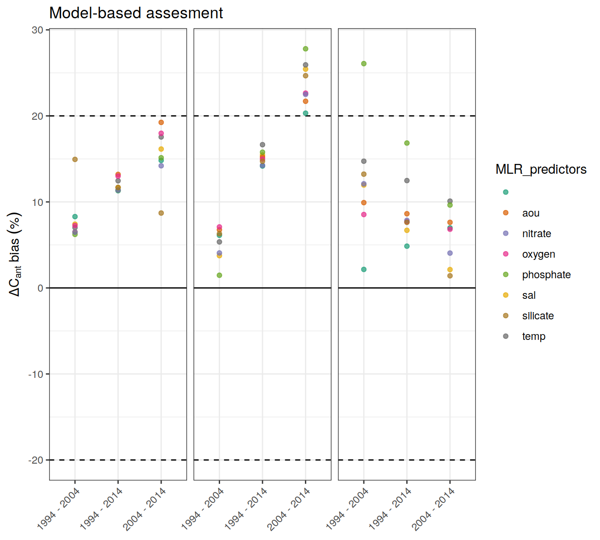
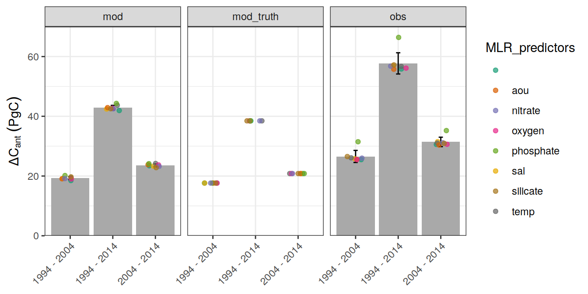
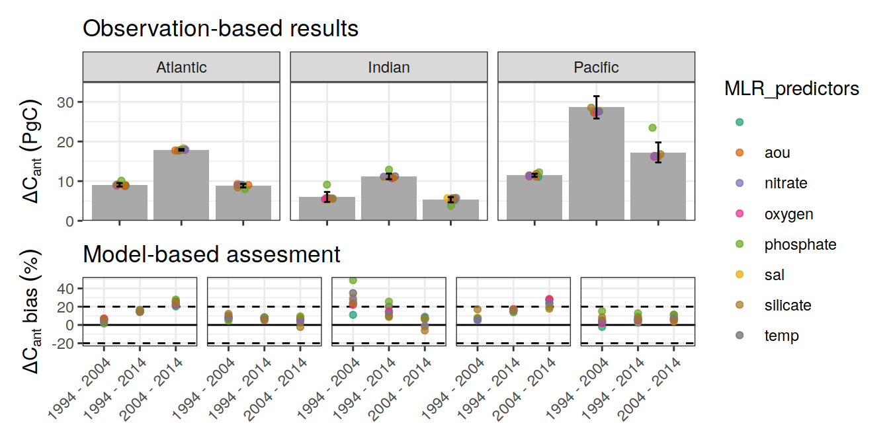

Budgets
Jens Daniel Müller
18 January, 2022
Last updated: 2022-01-18
Checks: 7 0
Knit directory: emlr_obs_analysis/analysis/
This reproducible R Markdown analysis was created with workflowr (version 1.6.2). The Checks tab describes the reproducibility checks that were applied when the results were created. The Past versions tab lists the development history.
Great! Since the R Markdown file has been committed to the Git repository, you know the exact version of the code that produced these results.
Great job! The global environment was empty. Objects defined in the global environment can affect the analysis in your R Markdown file in unknown ways. For reproduciblity it’s best to always run the code in an empty environment.
The command set.seed(20210412) was run prior to running the code in the R Markdown file. Setting a seed ensures that any results that rely on randomness, e.g. subsampling or permutations, are reproducible.
Great job! Recording the operating system, R version, and package versions is critical for reproducibility.
Nice! There were no cached chunks for this analysis, so you can be confident that you successfully produced the results during this run.
Great job! Using relative paths to the files within your workflowr project makes it easier to run your code on other machines.
Great! You are using Git for version control. Tracking code development and connecting the code version to the results is critical for reproducibility.
The results in this page were generated with repository version f441bed. See the Past versions tab to see a history of the changes made to the R Markdown and HTML files.
Note that you need to be careful to ensure that all relevant files for the analysis have been committed to Git prior to generating the results (you can use wflow_publish or wflow_git_commit). workflowr only checks the R Markdown file, but you know if there are other scripts or data files that it depends on. Below is the status of the Git repository when the results were generated:
Ignored files:
Ignored: .Rhistory
Ignored: .Rproj.user/
Ignored: data/
Ignored: output/other/
Ignored: output/publication/
Untracked files:
Untracked: analysis/child/
Untracked: figure/bias_density_distribution-1.png
Untracked: figure/bias_density_distribution_ensemble-1.png
Untracked: figure/cases_absolute-1.png
Untracked: figure/cases_absolute-2.png
Untracked: figure/cases_absolute-3.png
Untracked: figure/cases_absolute-4.png
Untracked: figure/cases_absolute-5.png
Untracked: figure/cases_absolute-6.png
Untracked: figure/cases_absolute_depth-1.png
Untracked: figure/cases_absolute_depth_global-1.png
Untracked: figure/cases_absolute_global-1.png
Untracked: figure/cases_bias-1.png
Untracked: figure/cases_bias-2.png
Untracked: figure/cases_bias-3.png
Untracked: figure/cases_bias_correlation-1.png
Untracked: figure/cases_bias_depth-1.png
Untracked: figure/cases_bias_depth_global-1.png
Untracked: figure/cases_bias_global-1.png
Untracked: figure/cases_bias_global-2.png
Untracked: figure/cases_bias_rel_depth-1.png
Untracked: figure/cases_bias_rel_depth_global-1.png
Untracked: figure/composed_absolute_and_bias_figure-1.png
Untracked: figure/composed_figure-1.png
Untracked: figure/density_distributions-1.png
Untracked: figure/ensemble_deviation_from_mean-1.png
Untracked: figure/ensemble_deviation_from_mean-2.png
Untracked: figure/ensemble_deviation_from_mean-3.png
Untracked: figure/ensemble_deviation_from_mean-4.png
Untracked: figure/ensemble_deviation_from_mean-5.png
Untracked: figure/ensemble_deviation_from_mean-6.png
Untracked: figure/ensemble_mean-1.png
Untracked: figure/ensemble_mean-2.png
Untracked: figure/ensemble_mean-3.png
Untracked: figure/ensemble_mean_bias-1.png
Untracked: figure/ensemble_mean_bias-2.png
Untracked: figure/ensemble_mean_bias-3.png
Untracked: figure/ensemble_mean_bias_global-1.png
Untracked: figure/ensemble_mean_bias_global-2.png
Untracked: figure/ensemble_mean_global-1.png
Untracked: figure/ensemble_mean_global-2.png
Untracked: figure/ensemble_mean_two_decades-1.png
Untracked: figure/ensemble_range-1.png
Untracked: figure/ensemble_sd-1.png
Untracked: figure/ensemble_sd-2.png
Untracked: figure/ensemble_sd-3.png
Untracked: figure/ensemble_sd_uncertainty-1.png
Untracked: figure/ensemble_sd_vs_bias-1.png
Untracked: figure/ensemble_sd_vs_bias-2.png
Untracked: figure/ensemble_sd_vs_bias-3.png
Untracked: figure/lat_grid_budget_all-1.png
Untracked: figure/lat_grid_budget_all-2.png
Untracked: figure/lat_grid_budget_ensemble-1.png
Untracked: figure/layer_budget_per_data_source-1.png
Untracked: figure/layer_budget_per_data_source-2.png
Untracked: figure/layer_budget_per_data_source-3.png
Untracked: figure/lon_grid_budget_all-1.png
Untracked: figure/lon_grid_budget_all-2.png
Untracked: figure/lon_grid_budget_all-3.png
Untracked: figure/lon_grid_budget_all-4.png
Untracked: figure/lon_grid_budget_ensemble-1.png
Untracked: figure/mean_tcant_over_atm_co2-1.png
Untracked: figure/profiles_per_MLR_target-1.png
Untracked: figure/profiles_per_MLR_target-2.png
Untracked: figure/profiles_per_MLR_target-3.png
Untracked: figure/profiles_per_data_source-1.png
Untracked: figure/profiles_per_data_source-2.png
Untracked: figure/profiles_per_data_source-3.png
Untracked: figure/profiles_per_period-1.png
Untracked: figure/profiles_per_period-2.png
Untracked: figure/profiles_per_period-3.png
Untracked: figure/slab_budgets-1.png
Untracked: figure/slab_budgets_bias-1.png
Untracked: figure/slab_budgets_bias-2.png
Untracked: figure/slab_budgets_bias-3.png
Untracked: figure/slab_budgets_individual-1.png
Untracked: figure/slab_budgets_individual-2.png
Untracked: figure/slab_budgets_individual-3.png
Untracked: figure/slab_budgets_spread-1.png
Untracked: figure/slab_budgets_spread-2.png
Untracked: figure/slab_budgets_spread-3.png
Untracked: figure/steady_state_comparison-1.png
Untracked: figure/steady_state_comparison-2.png
Untracked: figure/steady_state_comparison-3.png
Untracked: figure/steady_state_comparison-4.png
Untracked: figure/steady_state_comparison-5.png
Untracked: figure/summed_decades-1.png
Unstaged changes:
Modified: analysis/_site.yml
Modified: code/Workflowr_project_managment.R
Note that any generated files, e.g. HTML, png, CSS, etc., are not included in this status report because it is ok for generated content to have uncommitted changes.
These are the previous versions of the repository in which changes were made to the R Markdown (analysis/MLR_predictor_budgets.Rmd) and HTML (docs/MLR_predictor_budgets.html) files. If you’ve configured a remote Git repository (see ?wflow_git_remote), click on the hyperlinks in the table below to view the files as they were in that past version.
| File | Version | Author | Date | Message |
|---|---|---|---|---|
| html | 269809e | jens-daniel-mueller | 2022-01-12 | Build site. |
| html | 1696b98 | jens-daniel-mueller | 2022-01-11 | Build site. |
| html | 570e738 | jens-daniel-mueller | 2022-01-10 | Build site. |
| Rmd | d3903e6 | jens-daniel-mueller | 2022-01-10 | rebuild with child docs |
version_id_pattern <- "p"
config <- "MLR_predictors"1 Read files
# identify required version IDs
Version_IDs_1 <- list.files(path = "/nfs/kryo/work/jenmueller/emlr_cant/observations",
pattern = paste0("v_1", "p"))
Version_IDs_2 <- list.files(path = "/nfs/kryo/work/jenmueller/emlr_cant/observations",
pattern = paste0("v_2", "p"))
Version_IDs_3 <- list.files(path = "/nfs/kryo/work/jenmueller/emlr_cant/observations",
pattern = paste0("v_3", "p"))
Version_IDs <- c(Version_IDs_1, Version_IDs_2, Version_IDs_3)
print(Version_IDs) [1] "v_1p01" "v_1p02" "v_1p03" "v_1p04" "v_1p05" "v_1p06" "v_1p07" "v_1p08"
[9] "v_2p01" "v_2p02" "v_2p03" "v_2p04" "v_2p05" "v_2p06" "v_2p07" "v_2p08"
[17] "v_3p01" "v_3p02" "v_3p03" "v_3p04" "v_3p05" "v_3p06" "v_3p07" "v_3p08"1.1 Global
for (i_Version_IDs in Version_IDs) {
# i_Version_IDs <- Version_IDs[1]
print(i_Version_IDs)
path_version_data <-
paste(path_observations,
i_Version_IDs,
"/data/",
sep = "")
# load and join data files
dcant_budget_global <-
read_csv(paste(path_version_data,
"dcant_budget_global.csv",
sep = ""))
dcant_budget_global_mod_truth <-
read_csv(paste(
path_version_data,
"dcant_budget_global_mod_truth.csv",
sep = ""
))
dcant_budget_global_bias <-
read_csv(paste(path_version_data,
"dcant_budget_global_bias.csv",
sep = ""))
dcant_budget_global <- bind_rows(dcant_budget_global,
dcant_budget_global_mod_truth)
dcant_budget_global <- dcant_budget_global %>%
mutate(Version_ID = i_Version_IDs)
dcant_budget_global_bias <- dcant_budget_global_bias %>%
mutate(Version_ID = i_Version_IDs)
params_local <-
read_rds(paste(path_version_data,
"params_local.rds",
sep = ""))
params_local <- bind_cols(
Version_ID = i_Version_IDs,
MLR_predictors := str_c(params_local$MLR_predictors, collapse = "|"),
tref1 = params_local$tref1,
tref2 = params_local$tref2)
tref <- read_csv(paste(path_version_data,
"tref.csv",
sep = ""))
params_local <- params_local %>%
mutate(
median_year_1 = sort(tref$median_year)[1],
median_year_2 = sort(tref$median_year)[2],
duration = median_year_2 - median_year_1,
period = paste(median_year_1, "-", median_year_2)
)
if (exists("dcant_budget_global_all")) {
dcant_budget_global_all <-
bind_rows(dcant_budget_global_all, dcant_budget_global)
}
if (!exists("dcant_budget_global_all")) {
dcant_budget_global_all <- dcant_budget_global
}
if (exists("dcant_budget_global_bias_all")) {
dcant_budget_global_bias_all <-
bind_rows(dcant_budget_global_bias_all,
dcant_budget_global_bias)
}
if (!exists("dcant_budget_global_bias_all")) {
dcant_budget_global_bias_all <- dcant_budget_global_bias
}
if (exists("params_local_all")) {
params_local_all <- bind_rows(params_local_all, params_local)
}
if (!exists("params_local_all")) {
params_local_all <- params_local
}
}[1] "v_1p01"
[1] "v_1p02"
[1] "v_1p03"
[1] "v_1p04"
[1] "v_1p05"
[1] "v_1p06"
[1] "v_1p07"
[1] "v_1p08"
[1] "v_2p01"
[1] "v_2p02"
[1] "v_2p03"
[1] "v_2p04"
[1] "v_2p05"
[1] "v_2p06"
[1] "v_2p07"
[1] "v_2p08"
[1] "v_3p01"
[1] "v_3p02"
[1] "v_3p03"
[1] "v_3p04"
[1] "v_3p05"
[1] "v_3p06"
[1] "v_3p07"
[1] "v_3p08"rm(
dcant_budget_global,
dcant_budget_global_bias,
dcant_budget_global_mod_truth,
params_local,
tref
)1.2 Regional
# Version_IDs <- Version_IDs[1:length(Version_IDs)-1]
for (i_Version_IDs in Version_IDs) {
# i_Version_IDs <- Version_IDs[1]
print(i_Version_IDs)
path_version_data <-
paste(path_observations,
i_Version_IDs,
"/data/",
sep = "")
# load and join data files
dcant_budget_basin_AIP <-
read_csv(paste(path_version_data,
"dcant_budget_basin_AIP.csv",
sep = ""))
dcant_budget_basin_AIP_mod_truth <-
read_csv(paste(
path_version_data,
"dcant_budget_basin_AIP_mod_truth.csv",
sep = ""
))
dcant_budget_basin_AIP <- bind_rows(dcant_budget_basin_AIP,
dcant_budget_basin_AIP_mod_truth)
dcant_budget_basin_AIP_bias <-
read_csv(paste(path_version_data,
"dcant_budget_basin_AIP_bias.csv",
sep = ""))
dcant_slab_budget_bias <-
read_csv(paste0(path_version_data,
"dcant_slab_budget_bias.csv"))
dcant_slab_budget <-
read_csv(paste0(path_version_data,
"dcant_slab_budget.csv"))
dcant_budget_basin_AIP <- dcant_budget_basin_AIP %>%
mutate(Version_ID = i_Version_IDs)
dcant_budget_basin_AIP_bias <- dcant_budget_basin_AIP_bias %>%
mutate(Version_ID = i_Version_IDs)
dcant_slab_budget <- dcant_slab_budget %>%
mutate(Version_ID = i_Version_IDs)
dcant_slab_budget_bias <- dcant_slab_budget_bias %>%
mutate(Version_ID = i_Version_IDs)
if (exists("dcant_budget_basin_AIP_all")) {
dcant_budget_basin_AIP_all <-
bind_rows(dcant_budget_basin_AIP_all, dcant_budget_basin_AIP)
}
if (!exists("dcant_budget_basin_AIP_all")) {
dcant_budget_basin_AIP_all <- dcant_budget_basin_AIP
}
if (exists("dcant_budget_basin_AIP_bias_all")) {
dcant_budget_basin_AIP_bias_all <-
bind_rows(dcant_budget_basin_AIP_bias_all,
dcant_budget_basin_AIP_bias)
}
if (!exists("dcant_budget_basin_AIP_bias_all")) {
dcant_budget_basin_AIP_bias_all <- dcant_budget_basin_AIP_bias
}
if (exists("dcant_slab_budget_all")) {
dcant_slab_budget_all <-
bind_rows(dcant_slab_budget_all, dcant_slab_budget)
}
if (!exists("dcant_slab_budget_all")) {
dcant_slab_budget_all <- dcant_slab_budget
}
if (exists("dcant_slab_budget_bias_all")) {
dcant_slab_budget_bias_all <-
bind_rows(dcant_slab_budget_bias_all,
dcant_slab_budget_bias)
}
if (!exists("dcant_slab_budget_bias_all")) {
dcant_slab_budget_bias_all <- dcant_slab_budget_bias
}
}[1] "v_1p01"
[1] "v_1p02"
[1] "v_1p03"
[1] "v_1p04"
[1] "v_1p05"
[1] "v_1p06"
[1] "v_1p07"
[1] "v_1p08"
[1] "v_2p01"
[1] "v_2p02"
[1] "v_2p03"
[1] "v_2p04"
[1] "v_2p05"
[1] "v_2p06"
[1] "v_2p07"
[1] "v_2p08"
[1] "v_3p01"
[1] "v_3p02"
[1] "v_3p03"
[1] "v_3p04"
[1] "v_3p05"
[1] "v_3p06"
[1] "v_3p07"
[1] "v_3p08"rm(
dcant_budget_basin_AIP,
dcant_budget_basin_AIP_bias,
dcant_budget_basin_AIP_mod_truth,
dcant_slab_budget,
dcant_slab_budget_bias
)1.3 Steady state
for (i_Version_IDs in Version_IDs) {
# i_Version_IDs <- Version_IDs[1]
print(i_Version_IDs)
path_version_data <-
paste(path_observations,
i_Version_IDs,
"/data/",
sep = "")
# load and join data files
dcant_obs_budget <-
read_csv(paste0(path_version_data,
"anom_dcant_obs_budget.csv"))
dcant_obs_budget <- dcant_obs_budget %>%
mutate(Version_ID = i_Version_IDs)
if (exists("dcant_obs_budget_all")) {
dcant_obs_budget_all <-
bind_rows(dcant_obs_budget_all, dcant_obs_budget)
}
if (!exists("dcant_obs_budget_all")) {
dcant_obs_budget_all <- dcant_obs_budget
}
}[1] "v_1p01"
[1] "v_1p02"
[1] "v_1p03"
[1] "v_1p04"
[1] "v_1p05"
[1] "v_1p06"
[1] "v_1p07"
[1] "v_1p08"
[1] "v_2p01"
[1] "v_2p02"
[1] "v_2p03"
[1] "v_2p04"
[1] "v_2p05"
[1] "v_2p06"
[1] "v_2p07"
[1] "v_2p08"
[1] "v_3p01"
[1] "v_3p02"
[1] "v_3p03"
[1] "v_3p04"
[1] "v_3p05"
[1] "v_3p06"
[1] "v_3p07"
[1] "v_3p08"rm(dcant_obs_budget)1.4 Atm CO2
co2_atm <-
read_csv(paste(path_preprocessing,
"co2_atm.csv",
sep = ""))all_predictors <- c("saltempaouoxygenphosphatenitratesilicate")
params_local_all <- params_local_all %>%
mutate(MLR_predictors = str_remove_all(all_predictors,
MLR_predictors))dcant_budget_global_all <- dcant_budget_global_all %>%
filter(estimate == "dcant",
method == "total") %>%
select(-c(estimate, method)) %>%
rename(dcant = value)
dcant_budget_global_all_depth <- dcant_budget_global_all
dcant_budget_global_all <- dcant_budget_global_all %>%
filter(inv_depth == params_global$inventory_depth_standard)
dcant_budget_global_bias_all <- dcant_budget_global_bias_all %>%
filter(estimate == "dcant") %>%
select(-c(estimate))
dcant_budget_global_bias_all_depth <- dcant_budget_global_bias_all
dcant_budget_global_bias_all <- dcant_budget_global_bias_all %>%
filter(inv_depth == params_global$inventory_depth_standard)dcant_budget_basin_AIP_all <- dcant_budget_basin_AIP_all %>%
filter(estimate == "dcant",
method == "total") %>%
select(-c(estimate, method)) %>%
rename(dcant = value)
dcant_budget_basin_AIP_all_depth <- dcant_budget_basin_AIP_all
dcant_budget_basin_AIP_all <- dcant_budget_basin_AIP_all %>%
filter(inv_depth == params_global$inventory_depth_standard)
dcant_budget_basin_AIP_bias_all <- dcant_budget_basin_AIP_bias_all %>%
filter(estimate == "dcant") %>%
select(-c(estimate))
dcant_budget_basin_AIP_bias_all_depth <- dcant_budget_basin_AIP_bias_all
dcant_budget_basin_AIP_bias_all <- dcant_budget_basin_AIP_bias_all %>%
filter(inv_depth == params_global$inventory_depth_standard)2 Bias thresholds
global_bias_rel_max <- 12.5
global_bias_rel_max[1] 12.5regional_bias_rel_max <- 30
regional_bias_rel_max[1] 303 Global
3.1 Individual cases
3.1.1 Absoulte values
legend_title = expression(atop(Delta * C[ant],
(mu * mol ~ kg ^ {
-1
})))
dcant_budget_global_all %>%
ggplot(aes(period, dcant, col = MLR_predictors)) +
geom_jitter(width = 0.05, height = 0) +
scale_color_brewer(palette = "Dark2") +
facet_grid(. ~ data_source) +
ylim(0,NA) +
theme(axis.text.x = element_text(angle = 45, hjust=1),
axis.title.x = element_blank())
| Version | Author | Date |
|---|---|---|
| 570e738 | jens-daniel-mueller | 2022-01-10 |
3.1.2 Biases
dcant_budget_global_bias_all %>%
ggplot(aes(period, dcant_bias, col = MLR_predictors)) +
geom_hline(yintercept = 0) +
scale_color_brewer(palette = "Dark2") +
labs(y = expression(atop(Delta * C[ant] ~ bias,
(mu * mol ~ kg ^ {-1})))) +
geom_point()
| Version | Author | Date |
|---|---|---|
| 570e738 | jens-daniel-mueller | 2022-01-10 |
p_global_bias <-
dcant_budget_global_bias_all %>%
ggplot() +
geom_hline(yintercept = global_bias_rel_max * c(-1,1),
linetype = 2) +
geom_hline(yintercept = 0) +
scale_color_brewer(palette = "Dark2") +
labs(y = expression(Delta * C[ant] ~ bias ~ ("%")),
title = "Model-based assesment") +
theme(axis.title.x = element_blank()) +
geom_point(aes(period, dcant_bias_rel, col = MLR_predictors),
alpha = 0.7) +
theme(axis.text.x = element_text(angle = 45, hjust=1),
axis.title.x = element_blank())
p_global_bias
| Version | Author | Date |
|---|---|---|
| 570e738 | jens-daniel-mueller | 2022-01-10 |
4 Regional
4.1 Individual cases
4.1.1 Absoulte values
dcant_budget_basin_AIP_all %>%
ggplot(aes(period, dcant, col = MLR_predictors)) +
geom_jitter(width = 0.05, height = 0) +
scale_color_brewer(palette = "Dark2") +
facet_grid(basin_AIP ~ data_source) +
ylim(0,NA) +
theme(axis.text.x = element_text(angle = 45, hjust=1),
axis.title.x = element_blank())
| Version | Author | Date |
|---|---|---|
| 570e738 | jens-daniel-mueller | 2022-01-10 |
4.1.2 Biases
dcant_budget_basin_AIP_bias_all %>%
ggplot(aes(period, dcant_bias, col=MLR_predictors)) +
geom_hline(yintercept = 0) +
geom_point() +
facet_grid(basin_AIP ~ .)
| Version | Author | Date |
|---|---|---|
| 570e738 | jens-daniel-mueller | 2022-01-10 |
dcant_budget_basin_AIP_bias_all %>%
ggplot() +
geom_tile(aes(y = 0, height = regional_bias_rel_max * 2,
x = "2004 - 2014", width = Inf,
fill = "bias\nthreshold"), alpha = 0.5) +
geom_hline(yintercept = 0) +
scale_fill_manual(values = "grey70", name = "") +
scale_color_brewer(palette = "Dark2") +
labs(y = expression(Delta ~ C[ant] ~ bias)) +
theme(axis.title.x = element_blank()) +
geom_jitter(aes(period, dcant_bias_rel, col = MLR_predictors),
width = 0.05, height = 0) +
facet_grid(. ~ basin_AIP)
| Version | Author | Date |
|---|---|---|
| 570e738 | jens-daniel-mueller | 2022-01-10 |
p_regional_bias <-
dcant_budget_basin_AIP_bias_all %>%
ggplot() +
geom_hline(yintercept = regional_bias_rel_max * c(-1,1),
linetype = 2) +
geom_hline(yintercept = 0) +
scale_color_brewer(palette = "Dark2") +
labs(y = expression(Delta * C[ant] ~ bias ~ ("%")),
title = "Model-based assesment") +
theme(axis.title.x = element_blank()) +
geom_point(aes(period, dcant_bias_rel, col = MLR_predictors),
alpha = 0.7) +
theme(axis.text.x = element_text(angle = 45, hjust=1),
axis.title.x = element_blank()) +
facet_grid(. ~ basin_AIP) +
theme(
strip.background = element_blank(),
strip.text.x = element_blank()
)
p_regional_bias
| Version | Author | Date |
|---|---|---|
| 570e738 | jens-daniel-mueller | 2022-01-10 |
4.2 Slab budgets
4.2.1 Absolute values
dcant_slab_budget_all %>%
filter(data_source == "obs",
period != "1994 - 2014") %>%
ggplot(aes(MLR_predictors, dcant, fill = gamma_slab)) +
geom_hline(yintercept = 0, col = "red") +
geom_col() +
scale_fill_scico_d(direction = -1) +
facet_grid(basin_AIP ~ period)
| Version | Author | Date |
|---|---|---|
| 570e738 | jens-daniel-mueller | 2022-01-10 |
dcant_slab_budget_all %>%
filter(data_source == "obs",
period != "1994 - 2014") %>%
group_by(basin_AIP) %>%
group_split() %>%
map(
~ ggplot(data = .x,
aes(MLR_predictors, dcant, fill = gamma_slab)) +
geom_hline(yintercept = 0) +
geom_col() +
scale_fill_scico_d(direction = -1) +
labs(title = paste("data_source:", unique(.x$basin_AIP))) +
facet_grid(gamma_slab ~ period)
)[[1]]
| Version | Author | Date |
|---|---|---|
| 570e738 | jens-daniel-mueller | 2022-01-10 |
[[2]]
| Version | Author | Date |
|---|---|---|
| 570e738 | jens-daniel-mueller | 2022-01-10 |
[[3]]
| Version | Author | Date |
|---|---|---|
| 570e738 | jens-daniel-mueller | 2022-01-10 |
4.2.2 Bias
dcant_slab_budget_bias_all %>%
filter(period != "1994 - 2014") %>%
group_by(basin_AIP) %>%
group_split() %>%
# head(1) %>%
map(
~ ggplot(data = .x,
aes(gamma_slab, dcant_bias, fill = gamma_slab)) +
geom_col() +
coord_flip() +
scale_x_discrete(limits = rev) +
scale_fill_scico_d(direction = -1) +
facet_grid(period ~ MLR_predictors) +
labs(title = paste("data_source:", unique(.x$basin_AIP)))
)[[1]]Warning: Removed 72 rows containing missing values (position_stack).
| Version | Author | Date |
|---|---|---|
| 570e738 | jens-daniel-mueller | 2022-01-10 |
[[2]]Warning: Removed 28 rows containing missing values (position_stack).
| Version | Author | Date |
|---|---|---|
| 570e738 | jens-daniel-mueller | 2022-01-10 |
[[3]]Warning: Removed 178 rows containing missing values (position_stack).
| Version | Author | Date |
|---|---|---|
| 570e738 | jens-daniel-mueller | 2022-01-10 |
4.2.3 Spread
dcant_slab_budget_all %>%
filter(period != "1994 - 2014",
data_source != "mod_truth") %>%
group_by(data_source, basin_AIP, gamma_slab, period) %>%
summarise(dcant_range = max(dcant) - min(dcant)) %>%
ungroup() %>%
group_split(basin_AIP) %>%
# head(1) %>%
map(
~ ggplot(data = .x,
aes(gamma_slab, dcant_range, fill = gamma_slab)) +
geom_col() +
coord_flip() +
scale_x_discrete(limits = rev) +
scale_fill_scico_d(direction = -1) +
facet_grid(period ~ data_source) +
labs(title = paste("data_source:", unique(.x$basin_AIP)))
)`summarise()` has grouped output by 'data_source', 'basin_AIP', 'gamma_slab'. You can override using the `.groups` argument.[[1]]
| Version | Author | Date |
|---|---|---|
| 570e738 | jens-daniel-mueller | 2022-01-10 |
[[2]]
| Version | Author | Date |
|---|---|---|
| 570e738 | jens-daniel-mueller | 2022-01-10 |
[[3]]
| Version | Author | Date |
|---|---|---|
| 570e738 | jens-daniel-mueller | 2022-01-10 |
5 Ensemble
5.1 Global
dcant_budget_global_all_in <- dcant_budget_global_all %>%
filter(data_source %in% c("mod", "obs"))
dcant_budget_global_ensemble <- dcant_budget_global_all_in %>%
group_by(data_source, period, tref2) %>%
summarise(dcant_mean = mean(dcant),
dcant_sd = sd(dcant),
dcant_range = max(dcant)- min(dcant)) %>%
ungroup()`summarise()` has grouped output by 'data_source', 'period'. You can override using the `.groups` argument.5.1.1 Mean
legend_title = expression(Delta * C[ant]~(PgC))
ggplot() +
geom_col(data = dcant_budget_global_ensemble,
aes(x = period,
y = dcant_mean),
fill = "darkgrey") +
geom_errorbar(
data = dcant_budget_global_ensemble,
aes(
x = period,
y = dcant_mean,
ymax = dcant_mean + dcant_sd,
ymin = dcant_mean - dcant_sd
),
width = 0.1
) +
geom_point(
data = dcant_budget_global_all,
aes(period, dcant, col = MLR_predictors),
alpha = 0.7,
position = position_jitter(width = 0.2, height = 0)
) +
scale_y_continuous(limits = c(0,70), expand = c(0,0)) +
scale_color_brewer(palette = "Dark2") +
facet_grid(. ~ data_source) +
labs(y = legend_title) +
theme(axis.text.x = element_text(angle = 45, hjust=1),
axis.title.x = element_blank())
| Version | Author | Date |
|---|---|---|
| 570e738 | jens-daniel-mueller | 2022-01-10 |
p_global_dcant <- ggplot() +
geom_col(data = dcant_budget_global_ensemble %>%
filter(data_source == "obs"),
aes(x = period,
y = dcant_mean),
fill = "darkgrey") +
geom_point(
data = dcant_budget_global_all %>%
filter(data_source == "obs"),
aes(period, dcant, col = MLR_predictors),
alpha = 0.7,
position = position_jitter(width = 0.1, height = 0)
) +
geom_errorbar(
data = dcant_budget_global_ensemble %>%
filter(data_source == "obs"),
aes(
x = period,
y = dcant_mean,
ymax = dcant_mean + dcant_sd,
ymin = dcant_mean - dcant_sd
),
width = 0.1
) +
scale_y_continuous(limits = c(0,70), expand = c(0,0)) +
scale_color_brewer(palette = "Dark2") +
labs(y = legend_title,
title = "Observation-based results") +
theme(axis.text.x = element_blank(),
axis.title.x = element_blank())
p_global_dcant_bias <-
p_global_dcant / p_global_bias +
plot_layout(guides = 'collect',
heights = c(2,1))
p_global_dcant_bias
| Version | Author | Date |
|---|---|---|
| 570e738 | jens-daniel-mueller | 2022-01-10 |
# ggsave(plot = p_global_dcant_bias,
# path = here::here("output/publication"),
# filename = "Fig_global_dcant_budget.png",
# height = 5,
# width = 5)
rm(p_global_bias, p_global_dcant, p_global_dcant_bias)5.1.2 Mean vs atm CO2
dcant_ensemble <- dcant_budget_global_ensemble %>%
filter(data_source == "obs",
period != "1994 - 2014") %>%
select(year = tref2, dcant_mean, dcant_sd)
tcant_S04 <- bind_cols(year = 1994, dcant_mean = 118, dcant_sd = 19)
tcant_ensemble <- full_join(dcant_ensemble, tcant_S04)Joining, by = c("year", "dcant_mean", "dcant_sd")tcant_ensemble <- left_join(tcant_ensemble, co2_atm)Joining, by = "year"co2_atm_pi <- bind_cols(pCO2 = 280, dcant_mean = 0, year = 1750, dcant_sd = 0)
tcant_ensemble <- full_join(tcant_ensemble, co2_atm_pi)Joining, by = c("year", "dcant_mean", "dcant_sd", "pCO2")tcant_ensemble <- tcant_ensemble %>%
arrange(year) %>%
mutate(tcant = cumsum(dcant_mean),
tcant_sd = cumsum(dcant_sd))
tcant_ensemble %>%
ggplot(aes(pCO2, tcant, ymin = tcant - tcant_sd, ymax = tcant + tcant_sd)) +
geom_ribbon(fill = "grey80") +
geom_point() +
geom_line() +
geom_text(aes(label = year), nudge_x = -5, nudge_y = 5) +
labs(x = expression(Atmospheric~pCO[2]~(µatm)),
y = expression(Total~oceanic~C[ant]~(PgC)))
| Version | Author | Date |
|---|---|---|
| 570e738 | jens-daniel-mueller | 2022-01-10 |
# ggsave(path = "output/publication",
# filename = "Fig_global_dcant_budget_vs_atm_pCO2.png",
# height = 4,
# width = 7)5.1.3 Sum decades
dcant_budget_global_all_in_sum <-
dcant_budget_global_all_in %>%
filter(period != "1994 - 2014") %>%
arrange(tref1) %>%
group_by(data_source, MLR_predictors) %>%
mutate(dcant = dcant + lag(dcant)) %>%
ungroup() %>%
drop_na() %>%
mutate(estimate = "sum")
dcant_budget_global_all_in_sum <-
bind_rows(
dcant_budget_global_all_in_sum,
dcant_budget_global_all_in %>%
filter(period == "1994 - 2014") %>%
mutate(estimate = "direct")
)
ggplot() +
geom_point(
data = dcant_budget_global_all_in_sum,
aes(estimate, dcant, col = MLR_predictors),
alpha = 0.7,
position = position_jitter(width = 0, height = 0)
) +
scale_y_continuous(limits = c(0,70), expand = c(0,0)) +
scale_color_brewer(palette = "Dark2") +
facet_grid(. ~ data_source) +
theme(axis.text.x = element_text(angle = 45, hjust=1),
axis.title.x = element_blank())
| Version | Author | Date |
|---|---|---|
| 570e738 | jens-daniel-mueller | 2022-01-10 |
5.1.4 Mean bias
dcant_budget_global_ensemble_bias <- full_join(
dcant_budget_global_ensemble %>%
filter(data_source == "mod") %>%
select(period, dcant_mean, dcant_sd),
dcant_budget_global_all %>%
filter(data_source == "mod_truth",
MLR_predictors == unique(dcant_budget_global_all$MLR_predictors)[1]) %>%
select(period, dcant)
)Joining, by = "period"dcant_budget_global_ensemble_bias <- dcant_budget_global_ensemble_bias %>%
mutate(dcant_mean_bias = dcant_mean - dcant,
dcant_mean_bias_rel = 100 * dcant_mean_bias / dcant)
dcant_budget_global_ensemble_bias %>%
ggplot(aes(period, dcant_mean_bias)) +
geom_hline(yintercept = 0) +
geom_point()
| Version | Author | Date |
|---|---|---|
| 570e738 | jens-daniel-mueller | 2022-01-10 |
dcant_budget_global_ensemble_bias %>%
ggplot(aes(period, dcant_mean_bias_rel)) +
geom_hline(yintercept = 0) +
geom_point()
| Version | Author | Date |
|---|---|---|
| 570e738 | jens-daniel-mueller | 2022-01-10 |
5.1.5 Vertical patterns
5.1.5.1 Absoulte values
dcant_budget_global_all_depth %>%
filter(data_source != "mod_truth") %>%
group_by(data_source) %>%
group_split() %>%
# head(1) %>%
map(
~ ggplot(data = .x,
aes(dcant, MLR_predictors, fill=period)) +
geom_vline(xintercept = 0) +
geom_col(position = "dodge") +
scale_fill_brewer(palette = "Dark2") +
facet_grid(inv_depth ~ .) +
labs(title = paste("data_source:", unique(.x$data_source)))
)[[1]]
| Version | Author | Date |
|---|---|---|
| 570e738 | jens-daniel-mueller | 2022-01-10 |
[[2]]
| Version | Author | Date |
|---|---|---|
| 570e738 | jens-daniel-mueller | 2022-01-10 |
5.1.5.2 Biases
dcant_budget_global_bias_all_depth %>%
ggplot(aes(dcant_bias, MLR_predictors, fill = period)) +
geom_vline(xintercept = 0) +
geom_col(position = "dodge") +
scale_fill_brewer(palette = "Dark2") +
facet_grid(inv_depth ~ .)
| Version | Author | Date |
|---|---|---|
| 570e738 | jens-daniel-mueller | 2022-01-10 |
dcant_budget_global_bias_all_depth %>%
ggplot(aes(dcant_bias_rel, MLR_predictors, fill = period)) +
geom_vline(xintercept = 0) +
geom_col(position = "dodge") +
scale_fill_brewer(palette = "Dark2") +
facet_grid(inv_depth ~ .)
| Version | Author | Date |
|---|---|---|
| 570e738 | jens-daniel-mueller | 2022-01-10 |
rm(dcant_budget_global_all,
dcant_budget_global_all_depth,
dcant_budget_global_bias_all,
dcant_budget_global_bias_all_depth,
dcant_budget_global_ensemble,
dcant_budget_global_ensemble_bias,
params_local_all)5.2 Regional
dcant_budget_basin_AIP_ensemble <- dcant_budget_basin_AIP_all %>%
filter(data_source %in% c("mod", "obs")) %>%
group_by(basin_AIP, data_source, period) %>%
summarise(dcant_mean = mean(dcant),
dcant_sd = sd(dcant),
dcant_range = max(dcant)- min(dcant)) %>%
ungroup()`summarise()` has grouped output by 'basin_AIP', 'data_source'. You can override using the `.groups` argument.5.2.1 Mean
dcant_budget_basin_AIP_ensemble %>%
ggplot(aes(period, dcant_mean, col=basin_AIP)) +
geom_pointrange(aes(ymax = dcant_mean + dcant_sd,
ymin = dcant_mean - dcant_sd),
shape = 21) +
facet_grid(. ~ data_source)
| Version | Author | Date |
|---|---|---|
| 570e738 | jens-daniel-mueller | 2022-01-10 |
p_regional_dcant <- ggplot() +
geom_col(
data = dcant_budget_basin_AIP_ensemble %>%
filter(data_source == "obs"),
aes(x = period,
y = dcant_mean),
fill = "darkgrey"
) +
geom_point(
data = dcant_budget_basin_AIP_all %>%
filter(data_source == "obs"),
aes(period, dcant, col = MLR_predictors),
position = position_jitter(width = 0.1, height = 0),
alpha = 0.7
) +
geom_errorbar(
data = dcant_budget_basin_AIP_ensemble %>%
filter(data_source == "obs"),
aes(
x = period,
y = dcant_mean,
ymax = dcant_mean + dcant_sd,
ymin = dcant_mean - dcant_sd
),
width = 0.1
) +
scale_y_continuous(limits = c(0, 35), expand = c(0, 0)) +
scale_color_brewer(palette = "Dark2") +
labs(y = legend_title,
title = "Observation-based results") +
theme(axis.text.x = element_blank(),
axis.title.x = element_blank()) +
facet_grid(. ~ basin_AIP)
p_regional_dcant_bias <-
p_regional_dcant / p_regional_bias +
plot_layout(guides = 'collect',
heights = c(2,1))
p_regional_dcant_biasWarning: Removed 1 rows containing missing values (geom_point).
| Version | Author | Date |
|---|---|---|
| 570e738 | jens-daniel-mueller | 2022-01-10 |
# ggsave(plot = p_regional_dcant_bias,
# path = "output/publication",
# filename = "Fig_regional_dcant_budget.png",
# height = 5,
# width = 10)
rm(p_regional_bias, p_regional_dcant, p_regional_dcant_bias)5.2.2 Mean bias
dcant_budget_basin_AIP_ensemble_bias <- full_join(
dcant_budget_basin_AIP_ensemble %>%
filter(data_source == "mod") %>%
select(basin_AIP, period, dcant_mean, dcant_sd),
dcant_budget_basin_AIP_all %>%
filter(data_source == "mod_truth",
MLR_predictors == unique(dcant_budget_basin_AIP_all$MLR_predictors)[1]) %>%
select(basin_AIP, period, dcant)
)Joining, by = c("basin_AIP", "period")dcant_budget_basin_AIP_ensemble_bias <- dcant_budget_basin_AIP_ensemble_bias %>%
mutate(dcant_mean_bias = dcant_mean - dcant,
dcant_mean_bias_rel = 100 * dcant_mean_bias / dcant)
dcant_budget_basin_AIP_ensemble_bias %>%
ggplot(aes(period, dcant_mean_bias, col = basin_AIP)) +
geom_hline(yintercept = 0) +
geom_point()
| Version | Author | Date |
|---|---|---|
| 570e738 | jens-daniel-mueller | 2022-01-10 |
dcant_budget_basin_AIP_ensemble_bias %>%
ggplot(aes(period, dcant_mean_bias_rel, col = basin_AIP)) +
geom_hline(yintercept = 0) +
geom_point()
| Version | Author | Date |
|---|---|---|
| 570e738 | jens-daniel-mueller | 2022-01-10 |
5.2.3 Vertical patterns
5.2.3.1 Absoulte values
dcant_budget_basin_AIP_all_depth %>%
filter(data_source != "mod_truth") %>%
group_by(data_source) %>%
group_split() %>%
# head(1) %>%
map(
~ ggplot(data = .x,
aes(dcant, MLR_predictors, fill = basin_AIP)) +
geom_vline(xintercept = 0) +
geom_col() +
scale_fill_brewer(palette = "Dark2") +
facet_grid(inv_depth ~ period) +
labs(title = paste("data_source:", unique(.x$data_source)))
)[[1]]
| Version | Author | Date |
|---|---|---|
| 570e738 | jens-daniel-mueller | 2022-01-10 |
[[2]]
| Version | Author | Date |
|---|---|---|
| 570e738 | jens-daniel-mueller | 2022-01-10 |
5.2.3.2 Biases
dcant_budget_basin_AIP_bias_all_depth %>%
ggplot(aes(dcant_bias, MLR_predictors, fill = basin_AIP)) +
geom_vline(xintercept = 0) +
geom_col() +
scale_fill_brewer(palette = "Dark2") +
facet_grid(inv_depth ~ period)
| Version | Author | Date |
|---|---|---|
| 570e738 | jens-daniel-mueller | 2022-01-10 |
dcant_budget_basin_AIP_bias_all_depth %>%
ggplot(aes(dcant_bias_rel, MLR_predictors, fill = basin_AIP)) +
geom_vline(xintercept = 0) +
geom_col(position = "dodge") +
scale_fill_brewer(palette = "Dark2") +
facet_grid(inv_depth ~ period)
| Version | Author | Date |
|---|---|---|
| 570e738 | jens-daniel-mueller | 2022-01-10 |
6 Steady state
dcant_obs_budget_all %>%
group_by(inv_depth) %>%
group_split() %>%
# head(1) %>%
map(
~ ggplot(data = .x,
aes(estimate, dcant_pos, fill = basin_AIP)) +
scale_fill_brewer(palette = "Dark2") +
geom_col() +
facet_grid(MLR_predictors ~ period) +
labs(title = paste("inventory depth:",unique(.x$inv_depth)))
)[[1]]
| Version | Author | Date |
|---|---|---|
| 570e738 | jens-daniel-mueller | 2022-01-10 |
[[2]]
| Version | Author | Date |
|---|---|---|
| 570e738 | jens-daniel-mueller | 2022-01-10 |
[[3]]
| Version | Author | Date |
|---|---|---|
| 570e738 | jens-daniel-mueller | 2022-01-10 |
[[4]]
| Version | Author | Date |
|---|---|---|
| 570e738 | jens-daniel-mueller | 2022-01-10 |
[[5]]
| Version | Author | Date |
|---|---|---|
| 570e738 | jens-daniel-mueller | 2022-01-10 |
sessionInfo()R version 4.0.3 (2020-10-10)
Platform: x86_64-pc-linux-gnu (64-bit)
Running under: openSUSE Leap 15.3
Matrix products: default
BLAS: /usr/local/R-4.0.3/lib64/R/lib/libRblas.so
LAPACK: /usr/local/R-4.0.3/lib64/R/lib/libRlapack.so
locale:
[1] LC_CTYPE=en_US.UTF-8 LC_NUMERIC=C
[3] LC_TIME=en_US.UTF-8 LC_COLLATE=en_US.UTF-8
[5] LC_MONETARY=en_US.UTF-8 LC_MESSAGES=en_US.UTF-8
[7] LC_PAPER=en_US.UTF-8 LC_NAME=C
[9] LC_ADDRESS=C LC_TELEPHONE=C
[11] LC_MEASUREMENT=en_US.UTF-8 LC_IDENTIFICATION=C
attached base packages:
[1] stats graphics grDevices utils datasets methods base
other attached packages:
[1] ggforce_0.3.3 metR_0.9.0 scico_1.2.0 patchwork_1.1.1
[5] collapse_1.5.0 forcats_0.5.0 stringr_1.4.0 dplyr_1.0.5
[9] purrr_0.3.4 readr_1.4.0 tidyr_1.1.3 tibble_3.1.3
[13] ggplot2_3.3.5 tidyverse_1.3.0 workflowr_1.6.2
loaded via a namespace (and not attached):
[1] httr_1.4.2 jsonlite_1.7.1 here_1.0.1
[4] modelr_0.1.8 assertthat_0.2.1 highr_0.8
[7] blob_1.2.1 cellranger_1.1.0 yaml_2.2.1
[10] pillar_1.6.2 backports_1.1.10 lattice_0.20-41
[13] glue_1.4.2 RcppEigen_0.3.3.7.0 digest_0.6.27
[16] RColorBrewer_1.1-2 promises_1.1.1 polyclip_1.10-0
[19] checkmate_2.0.0 rvest_0.3.6 colorspace_2.0-2
[22] htmltools_0.5.0 httpuv_1.5.4 Matrix_1.2-18
[25] pkgconfig_2.0.3 broom_0.7.9 haven_2.3.1
[28] scales_1.1.1 tweenr_1.0.2 whisker_0.4
[31] later_1.2.0 git2r_0.27.1 generics_0.1.0
[34] farver_2.0.3 ellipsis_0.3.2 withr_2.3.0
[37] cli_3.0.1 magrittr_1.5 crayon_1.3.4
[40] readxl_1.3.1 evaluate_0.14 fs_1.5.0
[43] fansi_0.4.1 MASS_7.3-53 xml2_1.3.2
[46] RcppArmadillo_0.10.1.0.0 tools_4.0.3 data.table_1.14.0
[49] hms_0.5.3 lifecycle_1.0.0 munsell_0.5.0
[52] reprex_0.3.0 compiler_4.0.3 rlang_0.4.10
[55] grid_4.0.3 rstudioapi_0.13 labeling_0.4.2
[58] rmarkdown_2.10 gtable_0.3.0 DBI_1.1.0
[61] R6_2.5.0 lubridate_1.7.9 knitr_1.33
[64] utf8_1.1.4 rprojroot_2.0.2 stringi_1.5.3
[67] parallel_4.0.3 Rcpp_1.0.5 vctrs_0.3.8
[70] dbplyr_1.4.4 tidyselect_1.1.0 xfun_0.25